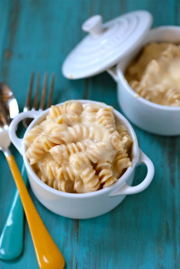

A simple dish for one.
Ingredients
- 1 Serving of pasta of your choosing
- 1 Tbsp Butter
- 2 Tbsp Flour
- 2/3-3/4 cup Milk
- 1/4 tsp Mustard Powder
- 1/2 cup Shredded Cheese of your own choosing
Directions
- Bring salted water to a boil in a medium sauce pan. Prepare pasta according to the directons on the package. Drain.
- In the same sauce pan, on medium heat, melt butter until it is simmering. Sprinkle flour over the melted butter and whisk to form a pasta. Allow the pasta to cook until golden brown. Slowly whisk in 2/3 cup of milk until it creates a smooth sauce. If a thinner sauce is desired use 3/4 cup. Sprinkle in mustard powder. Add in shredded cheese and stir until thick and creamy.
- Add in drained pasta and stir into the cheese sauce until pasta is covered. Serve immediately.